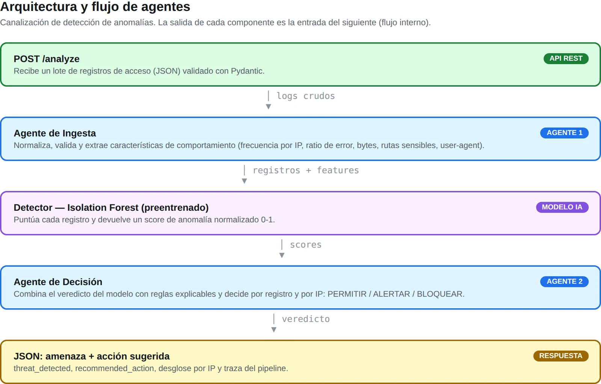
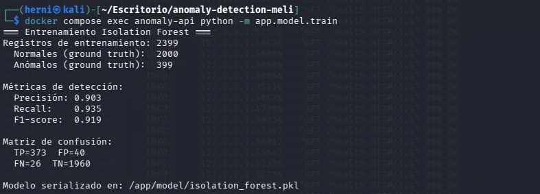
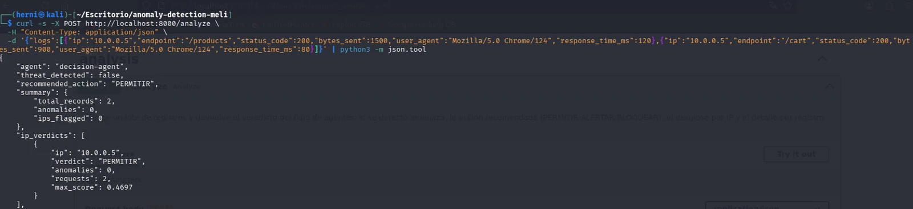
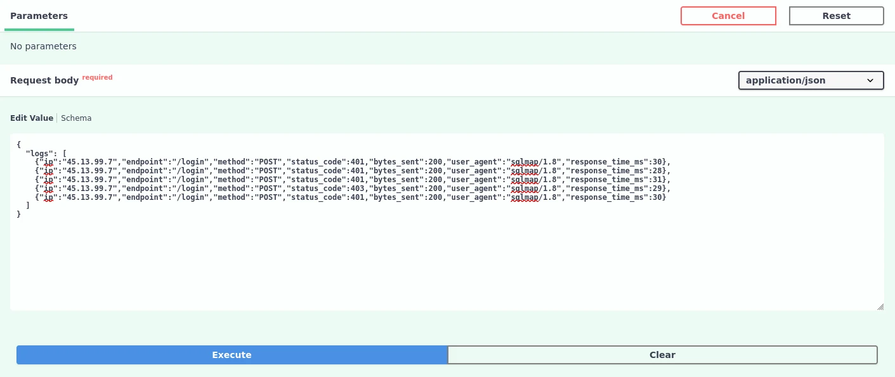
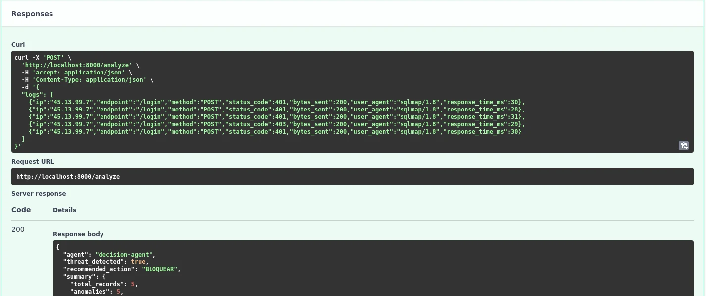
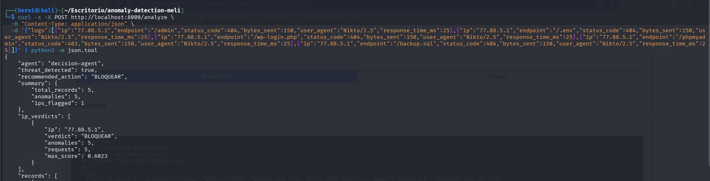
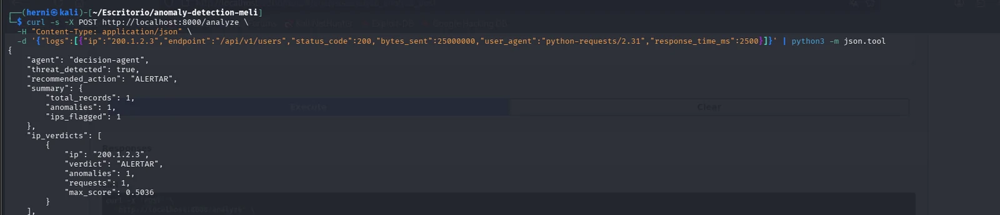

// case study · interview challenge
Anomaly Detection API
A backend module that uses an AI model to spot anomalous behavior in HTTP access logs and, through a two-agent flow, suggests an action: allow, alert or block.

01What it does
It receives a batch of HTTP access records and answers whether there's a threat and what to do.
An ingestion agent cleans the records and extracts behavior features,
a pre-trained Isolation Forest scores how anomalous each one is, and a
decision agent combines that score with explainable rules to pick
ALLOW, ALERT or
BLOCK.
Brute force
Many requests from one IP in little time, with a high 401/403 rate
Path scanning
One IP walking sensitive endpoints (/admin, /.env, /phpmyadmin) with lots of 404s
Data exfiltration
Abnormally large responses: an atypical volume of bytes
02Two agents, one pipeline
The agents are decoupled and each has a single job. The ingestion agent knows nothing about threats or actions; it only prepares clean data. The decision agent gets records already scored by the model and decides per record and per IP. An orchestrator passes one agent's output to the next with an explicit data contract, and the response includes a trace of what each agent did.
The model doesn't look at isolated requests but at aggregated behavior per IP, which is what gives an attacker away:
03The model
Isolation Forest isolates observations with random cuts: anomalies are rare and different, so they get isolated in fewer cuts and receive a lower score. The key decision was to train it only on clean traffic, so it learns what normal looks like and flags anything that drifts from it. Mixing anomalies into training muddies that notion of normal.
The dataset is synthetic on purpose: having the ground truth makes detection measurable and the project reproducible. Against 2,000 normal and 399 anomalous records:
Precision
0.90
Recall
0.94
F1-score
0.92


As an optional step, 10% of labeled data is used to calibrate the decision threshold that maximizes F1: the labels tune the cut-off point, they don't retrain the forest.
04In action
Each scenario sent to POST /analyze, from the terminal and from the Swagger UI.
Every IP and every record comes back with its own verdict and a readable reason.










05The API
{
"threat_detected": true,
"recommended_action": "BLOQUEAR",
"ip_verdicts": [
{ "ip": "45.13.99.7", "verdict": "BLOQUEAR", "anomalies": 1, "max_score": 0.58 }
],
"records": [
{ "endpoint": "/login", "status_code": 401, "anomaly_score": 0.58,
"reason": "Score alto (0.58): respuesta de error 401; user-agent sospechoso." }
]
}Trimmed response. The API answers in Spanish.
06Design decisions
- AI + rules. In security, a block recommendation has to be justifiable. The score says how anomalous something is; the rules explain why, and that ends up in the
reasonfield. - Per IP, not only per record. One request can look normal; what gives an attacker away is the pattern across all their requests.
- Decoupled agents. Ingestion and decision only talk through the orchestrator, so adding a third agent (say, notifications) doesn't touch the others.
- FastAPI. Async performance, automatic Pydantic validation and Swagger docs for free.